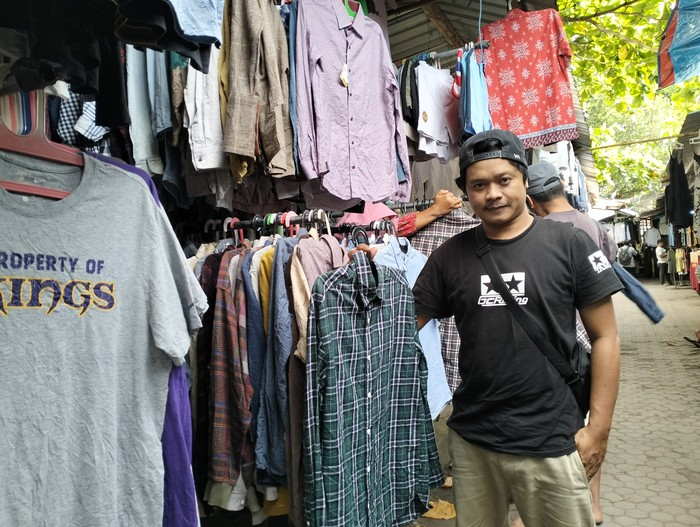

| No | Judul Berita | Tanggal Berita |
|---|---|---|
| 1 | Pedagang Pakaian Bekas Import di Pasar Karang Sukun Menolak Tutup | Jum,at 7 April 2023 |
| 2 | Perempuan Pedagang Baju Import Bekas Tak Ditahan, Cuma Wajib Lapor | Kamis 6 April 2023 |
Pedagang pakaian bekas atau thrifting di Pasar Karang Sukun Kota Mataram, Nusa Tenggara Barat (NTB) menolak tutup. Mereka tak patah semangat meski salah satu pedagang berinisial MN ditangkap polisi pada Selasa (4/4/23).
Salah satunya Sanusi (34) asal Kota Mataram. Menurutnya usaha berjualan pakaian bekas impor bermerek yang diambil dari Kota Surabaya dan Bali itu menjadi salah satu tumpuan mata pencaharian sehari-hari.
"Memang sejak ada pemusnahan barang impor di Jawa dan beberapa daerah, omset di Karang Sukun ini menurun. Dulu sebelum ada razia dan penangkapan barang impor bisa tembus Rp 3 juta dalam sehari," kataOcid sapaannya kepadadetikBali, Kamis sore(6/4/2023) di Pasar Karang Sukun, KotaMataram.Menurut Ocid, sebelum ada isu pemusnahan barang-barang impor di Jawa, biasanya pedagang meraih untung di atas Rp 1 juta dalam sehari. Bahkan pada bulan Ramadan 2022 bisa tembus Rp 2-3 juta dalam sehari."Tiga bulan ini masih sepi. Biasanya ramai. Tapi lagi ada aturan pelarangan impor ini omzet menurun," ungkapnya. Ocid mengatakan dia sudah berjualan barang bekas impor sejak 2008. Jika ada perintah penutupan dari Menteri Perdagangan maka para pedagang akan protes.
Baca Selengkapnya pada Link di bawah ini.
https://www.detik.com/bali/nusra/d-6660079/pedagang-pakaian-bekas-impor-di-pasar-karang-sukun-menolak-tutupPerempuan pedagang baju impor bekas asal Kelurahan Karang Pule, Kecamatan Sekarbela, Kota Mataram, Nusa Tenggara Barat (NTB), MN (30), ditetapkan sebagai tersangka oleh Polda NTB. Ia berkasus seusai kedapatan menjual 31 bal baju impor bekas.
Namun, Direktur Reskrimsus Polda NTB Kombes Nasrun Pasaribu menuturkan, MN tidak ditahan di Mapolda NTB. Tersangka hanya dikenakan wajib lapor. "Ya, benar, kami tidak tahan. Hanya dikenakan wajib lapor," ujarnya, Kamis (6/4/23)
Adapun, untuk barang bukti 31 bal/karung baju impor bekas (thrifting) yang dijual MN secara online dan offline bakal dimusnahkan sesuai arahan Kementerian Perdagangan.

Baca Selengkapnya pada Link di bawah ini.
https://www.detik.com/bali/nusra/d-6659192/perempuan-pedagang-baju-impor-bekas-tak-ditahan-cuma-wajib-lapor